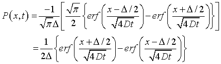

実際の濃度変化の様子．
さて，実際に解いた，

をグラフ化してみましょう．
赤線が中心からの拡散の様子，白線がある幅を持った場合の拡散の様子です．
このように，最初，矩形的だったものが，徐々にその形が崩れていく様子がわかると思います．
つまり，中心近くは，
当初は濃度変化なし → 徐々に減少
となります．
このデモでは広めの範囲で初期濃度を設定しましたが，狭めに設定すると，時間がたつと赤線と白線が同じになっていく（普通のガウス関数で近似できる）ことがわかります．
では，ある地点での濃度はどうなるのでしょう？